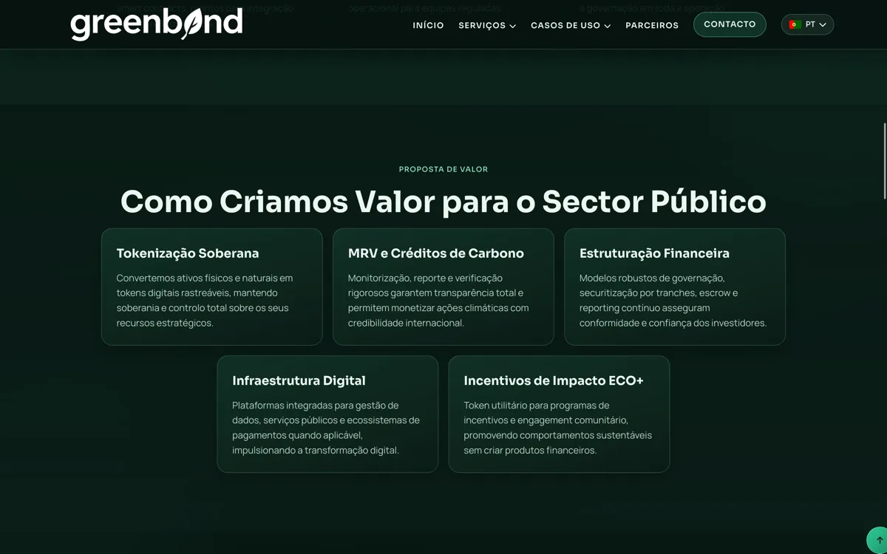
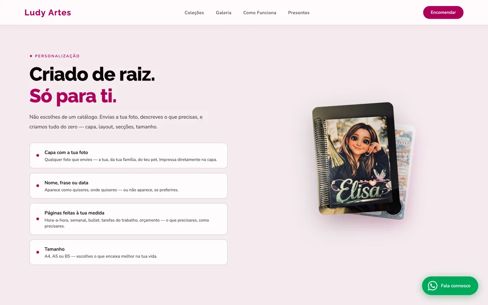
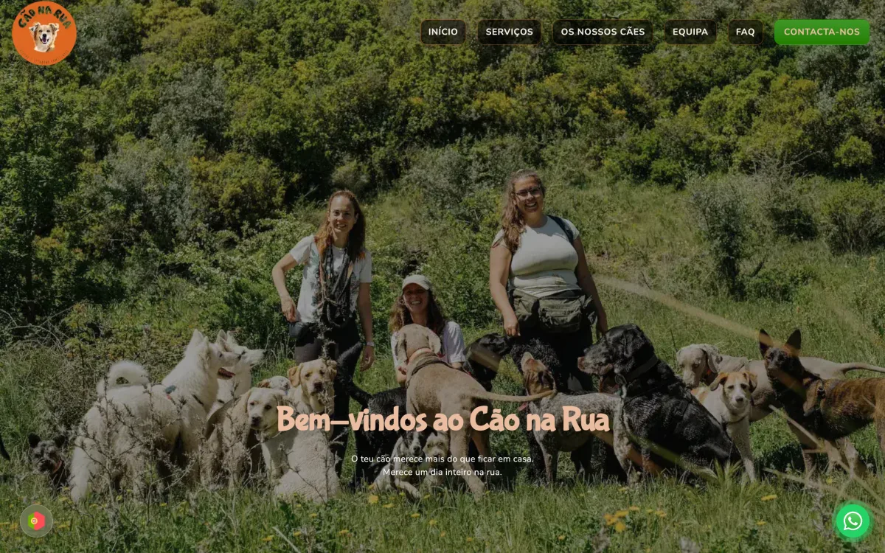
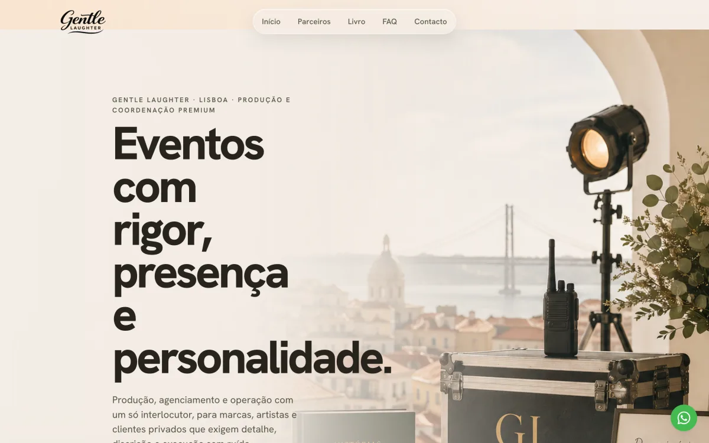

Barata Studio
Do briefing ao launch: web feita à mão.
Websites personalizados para negócios que precisam de parecer credíveis, claros e bem resolvidos logo no primeiro contacto.
Resposta em menos de 24h · processo claro · implementação à medida
Posicionamento
Sem fórmulas prontas.
Sem sites com aspeto de template.
Cada projeto é pensado de raiz, desenhado com intenção e construído para refletir a identidade do cliente com clareza, sofisticação e utilidade real.
Identidade
Uma identidade construída com intenção.
Minimalista na forma,
detalhada na execução.
Processo
Web feita à mão.
01
Briefing
Entender a marca, o negócio e o objetivo do site. Sem pressupostos, com perguntas certas.
02
Design
Transformar intenção em direção visual clara. Cada detalhe tem uma razão de existir.
03
Build
Desenvolver uma experiência limpa, rápida e cuidada. Código à medida, sem atalhos.
04
Launch
Entregar um site pronto para ser usado, mostrado e evoluído. Do briefing ao launch.
Impacto
Do conceito ao resultado real.
Resultados concretos, desempenho sólido e presença digital ajustada ao contexto de cada negócio.
100/100
Performance Google
800+
Agendas Entregues
Serviços
Serviços
-
01
Websites Institucionais
Estruturas completas para negócios que precisam de credibilidade, clareza e uma presença digital adulta.
-
02
Landing Pages
Páginas orientadas a contacto, campanhas ou validação de oferta, com foco em mensagem e decisão.
-
03
Redesign de Sites
Revisão estrutural, visual e técnica para deixar para trás sites genéricos ou desatualizados.
-
04
Identidade Digital Base
Base visual para o ambiente digital: tipografia, paleta, componentes e direção consistente entre páginas.
-
05
Manutenção & Evolução
Suporte contínuo para ajustes, evolução e pequenas melhorias depois do lançamento.
Se já sabe o que precisa, o próximo passo é simples: alinhamos escopo, prioridade e prazo.
Trabalho
Projetos selecionados



Vamos conversar?
Quando a presença digital pede mais do que um template.
Se precisa de um site mais credível, mais claro e menos genérico, o próximo passo é partilhar o contexto do projeto. A resposta chega em menos de 24 horas.